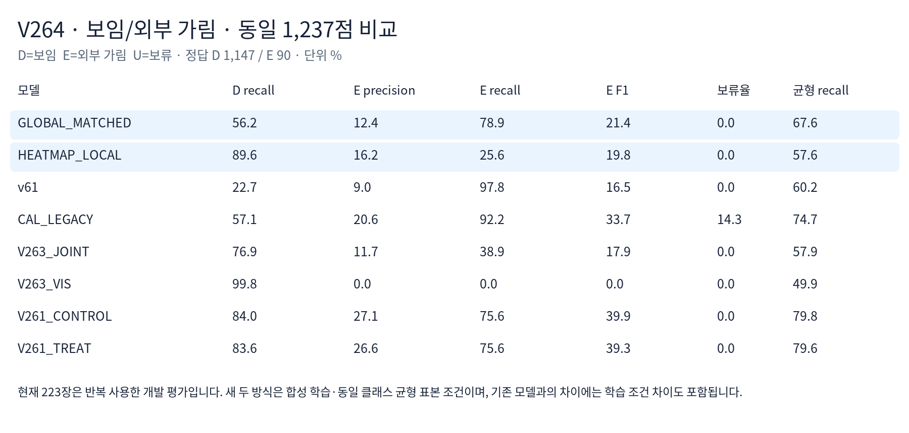
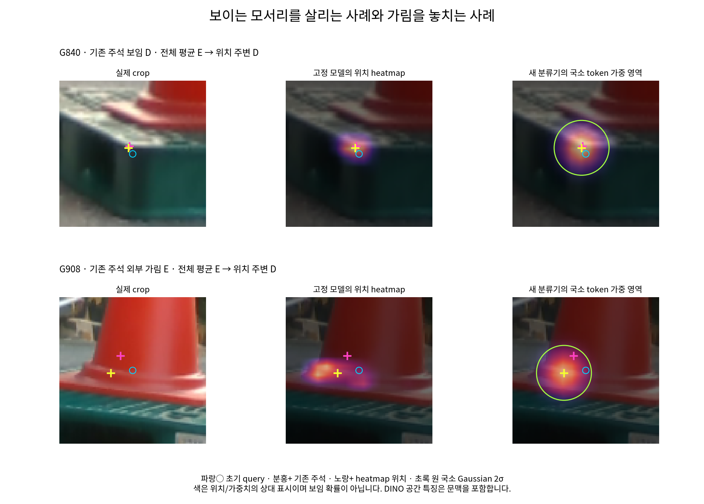

기존 DINO·위치 heatmap·crop·초기 query·native 대응·좌표를 고정했습니다. 동일한 780→32→1 분류기 두 개를 학습했습니다. 전체 평균 대조군은 [전역 특징, 전역 특징, 보조 정보], 위치 주변 모델은 [전역 특징, heatmap 예측 위치의 Gaussian 국소 특징, 같은 보조 정보]를 읽습니다. 국소 σ는 1.5 token 칸으로 사전에 고정했습니다. 보조 정보는 키포인트 번호·예측 이동량·분포 peak·entropy로 동일합니다.
합성 FIT86 base/DEV24 base를 유지했습니다. FIT 라벨 D4,626/E190 중 입력 불가를 제외한 D4,572/E188을 D16/E16 균형 배치로 표집했습니다. 초기값·배치가 같고 각25,025 parameter·1,000 AdamW update·seed17입니다. 최종 checkpoint와 logit0 임계값을 실사 추론 전 동결했습니다. 자기 가림 S는 E 라벨로 만들지 않았습니다.
합성 DEV는 전체 평균 D→E66·E 정답50/56에서, 위치 주변 D→E9·E 정답54/56으로 개선됐습니다. 실사 PRIMARY1,237점에서는 D→E502→119로 줄었지만 E→D19→67로 늘었습니다. 균형 recall은67.6→57.6%, 외부 가림 F1은21.4→19.8%입니다.
현재223장은 이번 fit·normalizer·설정/threshold 선택에 사용하지 않았습니다. 과거 반복 확인한 개발 평가 자료이므로 독립 검증이라고 부르지 않습니다. 옛 V263과 차이에는 균형 학습·특징/분류기 차이도 포함되며, 국소 pooling 효과는 새 전체 평균 대조군과 비교해야 합니다. CAL_LEGACY는 과거 실사 CAL 학습 이력이 있습니다.

| 유형 | 모델 | 보임 정답 | 외부 가림 정답 | E precision | E recall | E F1 | 보류율 |
|---|---|---|---|---|---|---|---|
| ALL | GLOBAL_MATCHED | 645/1147 | 71/90 | 12.4% | 78.9% | 21.4% | 0.0% |
| ALL | HEATMAP_LOCAL | 1028/1147 | 23/90 | 16.2% | 25.6% | 19.8% | 0.0% |
| ALL | CAL_LEGACY | 655/1147 | 83/90 | 20.6% | 92.2% | 33.7% | 14.3% |
| ALL | V263_JOINT | 882/1147 | 35/90 | 11.7% | 38.9% | 17.9% | 0.0% |
| ALL | V261_CONTROL | 964/1147 | 68/90 | 27.1% | 75.6% | 39.9% | 0.0% |
| WOOD_PRIMARY105 | GLOBAL_MATCHED | 393/616 | 21/29 | 8.6% | 72.4% | 15.4% | 0.0% |
| WOOD_PRIMARY105 | HEATMAP_LOCAL | 510/616 | 11/29 | 9.4% | 37.9% | 15.1% | 0.0% |
| WOOD_PRIMARY105 | CAL_LEGACY | 448/616 | 23/29 | 26.1% | 79.3% | 39.3% | 16.6% |
| WOOD_PRIMARY105 | V263_JOINT | 519/616 | 6/29 | 5.8% | 20.7% | 9.1% | 0.0% |
| WOOD_PRIMARY105 | V261_CONTROL | 534/616 | 21/29 | 20.4% | 72.4% | 31.8% | 0.0% |
| SQUARE118 | GLOBAL_MATCHED | 252/531 | 50/61 | 15.2% | 82.0% | 25.6% | 0.0% |
| SQUARE118 | HEATMAP_LOCAL | 518/531 | 12/61 | 48.0% | 19.7% | 27.9% | 0.0% |
| SQUARE118 | CAL_LEGACY | 207/531 | 60/61 | 19.1% | 98.4% | 32.0% | 11.8% |
| SQUARE118 | V263_JOINT | 363/531 | 29/61 | 14.7% | 47.5% | 22.5% | 0.0% |
| SQUARE118 | V261_CONTROL | 430/531 | 47/61 | 31.8% | 77.0% | 45.0% | 0.0% |

G840은 보이는 팔레트 모서리 쪽 국소 특징으로 D를 복구했습니다. G908은 기존 E 주석 위치와 달리 콘의 경계 쪽으로 heatmap/국소 가중 영역이 이동했고 D로 판정했습니다. 이 사례는 지정 키포인트 대신 인접 구조를 읽을 가능성을 보여줍니다. 특정 원인을 확정하는 인과 실험은 아닙니다.
초기 오차≤3px인 수동 보임376점의 E 오판은181→38점입니다. 정사각형111→3, 목재70→35로 효과가 다릅니다. 위치 좌표를 새로 개선한 결과가 아니라 고정 위치 정보로 가림 판정을 바꾼 결과입니다.
고정16셀·유형별 전체 혼동행렬과 실제 crop · 목재8셀 · 정사각형8셀
실사 결과를 본 뒤 추가 학습·임계값 변경·PnP는 하지 않았습니다. E188은 반복 source family와 적은 물리 장면을 포함하며 native6/7의 합성 DEV 외부 가림은 없습니다. 가린 점에는 원래 위치 heatmap 정답을 주지 않았고 softmax는 항상 봉우리를 만듭니다. 국소 특징만으로 지정 점의 직접 보임을 보장하지 못합니다.
G996은 기존 E 주석과 사용자 해석의 불일치로 재검토 대상입니다. G981/G200의 작은3px 경계 초과를 큰 실패로 단정하지 않았습니다. 원 주석은 유지했습니다.
학습 전 고정 조건 · 실사 전 동결 · 주석 평가 전 예측 동결 · 요약 JSON · 재현 안내 · 96개 집계 독립 재현